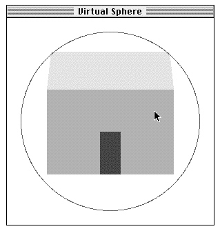
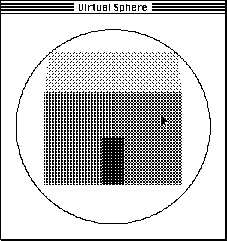
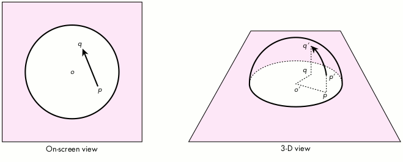
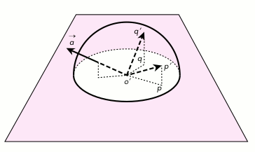

One essential part of any 3-D graphics application is the ability to turn an object so
that it can be viewed from different sides. This article describes a user interface
technique called the Virtual Sphere that allows you to perform continuous 3-D
rotation using a 2-D input device such as a mouse. For those who have played with my
Rotation Controller application and have been waiting for source code, here it is! For
others, this article is a good way to learn something about interactive 3-D graphics
and user interfaces for 3-D.
There are many situations in which users might want to view a 3-D graphics object
from different sides. They might want to do so while constructing an object or
rearranging objects in a scene. Or they may be viewing a multimedia document and
want to turn around a 3-D object that's embedded in the page. Whatever the context,
it's important to provide a simple, intuitive interface for the task that's available to a
wide user base.
The problem of 3-D rotation has been approached in many ways. Some people have
designed their applications to use higher-degrees-of-freedom input devices such as
3-D mice, 3-D trackballs, the 6-D Spaceball, and the 6-D Polhemus. These devices
let you control values forx, y, and z (and perhaps roll, pitch, and yaw) at the same
time. Unfortunately, these input devices incur extra cost and must be available on the
machine currently being used. The user must also learn how to use the device and
possibly learn a new interface paradigm.
Other applications have stayed with 2-D input devices because of their familiarity
and availability. However, many of these applications will let you perform rotation
only about thex, y, or z axis, while others will let you use the mouse to perform only
"2-D rotations," in which the user must specify an axis of rotation lying on, say,
thex-y plane. In both cases, the user needs to change tools or hold down modifier keys
(or mouse buttons) to specify rotations about other axes. This is cumbersome, but
many have accepted the fact that they have only two degrees of freedom when using a
device like a mouse.
The Virtual Sphere controller is a user interface tool developed to solve the problem
of 3-D rotation using a 2-D input device. The controller allows continuous rotation
about an arbitrary axis in three- dimensional space. Because the controller works
with a 2-D input device, the interface can be used on a wide range of machines with a
mouse, trackball, touch screen, or similar device. (This article will assume the use of
a mouse.) An important part of the design effort was user testing. Not only must the
controller be technologically sound, it must also be easy to learn and use. Testing
results will be discussed later.

Grayscale version

Dithered version
Figure 1 The Initial Window, in Grayscale and With Dithering
Before getting into the design and implementation of the Virtual Sphere interface, let's
first play a bit with the sample application. You'll need to use a machine running
System 7 or a System 6 machine with 32-Bit QuickDraw. Find and launch the
application VirtualSphereSample, provided on this issue's CD. As shown in Figure 1,
you'll see a 3-D house enclosed by the circular Virtual Sphere controller (hereafter
called thecue).
You'll see a color, grayscale, or dithered rendering of the house, depending on your
monitor and bit depth. To rotate the house, move the pointer inside the cue and then
drag the pointer around. Observe what happens to the house when you drag in the
following directions:
See if you can position the house in a desired orientation.
The Virtual Sphere controller simulates the mechanics of a physical 3-D trackball
that can freely rotate about any arbitrary axis in three-dimensional space. The user
can imagine the cue to be a glass sphere that's encasing the object to be rotated.
Rotation is a matter of rolling the sphere and therefore the object with the pointer.
Up-and-down and left-and-right movement at the center of the cue is equivalent to
"rolling" the imaginary sphere at its apex and produces rotation about an axis lying on
the plane of the screen. Movement along (or completely outside) the edge of the cue is
equivalent to rolling the sphere at the edge and produces rotation about the axis
perpendicular to the screen.
The Virtual Sphere is unusual in the sense that you seem to be able to squeeze an extra
degree of freedom out of a 2-D input device. The action of rolling the Virtual Sphere
lets you specify an arbitrary rotation axis in three-dimensional space, with the
advantage that you don't need to think about the rotation axis. You just roll, and the
object turns in the expected way.
To validate the usefulness of the Virtual Sphere interface, two colleagues and I designed
an experiment to compare the performance of different rotational interfaces in a
matching task. In the experiment, the computer displays a house at a certain
orientation, and the user has to use the given rotational interface to match that
orientation. The performance measurement is based on time and accuracy. The result
showed that the Virtual Sphere was indeed easy to use and was fastest for complex
rotations. If you're interested in the details of the other rotational interfaces and the
experiment, they're described in "A Study in Interactive 3-D Rotation Using 2-D
Control Devices" (see "Recommended Reading" at the end of this article). A version of
the rotation controllers and computer experiment is available on this issue's CD.
The general idea of this interface is that the Virtual Sphere cue is drawn around the
object to be rotated. The cue is centered over the object's center of rotation and should
be just large enough to enclose the object. When the user drags over the cue, the
successivex-y locations of the pointer are used to incrementally rotate the object. The
next few paragraphs delve into the mathematics of this process. Those of you with an
aversion to vectors and trigonometry may want to skip ahead to the next section.
The orientation of the object is represented in the sample code by a 4 x 4 rotation
matrix. At each movement of the pointer, an incremental rotation matrix is computed,
using the Virtual Sphere algorithm. This matrix is then concatenated with the object's
matrix, and the object is redisplayed. This process is repeated until the user releases
the mouse button.
The incremental rotation matrix is computed using the Virtual Sphere algorithm as
follows: Figure 2 shows a cue as it appears on the screen and also gives the
corresponding 3-D view. The cue is conceptually a hemisphere protruding from the
screen. When the pointer is moved from pointp to pointq on the screen, we think of it
as moving from pointp' to pointq' on the surface of the imaginary hemisphere. We
compute the pointsp' and q'by projecting pointsp and q upward (that is, straight out
from the screen) from the circle to the surface of the hemisphere. To simplify the
math, we'll assume that the cue and hemisphere each have a radius of 1.

Figure 2 The Virtual Sphere Cue and Its Corresponding 3-D Hemisphere
Given that we now have points p' and q', we create vectors from the center of the
hemisphere, o', calling them vectors
and
. The axis of rotation,
, is
perpendicular to the two vectors and can be computed using the vector cross-product
(see Figure 3)

Figure 3 Computing the Axis of Rotation
The amount of rotation, θ, is the angle between the vectors, and is computed from
the arc sine of the length of
:
The corresponding 4 x 4 incremental rotation matrix is
where
Note that we have a choice here for computing the matrix. We can first compute the
angle of rotation and then use the sine and cosine functions to obtain s and c.
However, knowing vector
and
, we can also compute s and c using the length
of
and the dot-product. The latter approach allows us to compute the matrix
efficiently without using any trigonometric calculations, which are expensive.
The Virtual Sphere algorithm just described is an improvement over the one
described in the paper "A Study in Interactive 3-D Rotation Using 2-D Control
Devices." The paper used a three-step procedure to convert movement of a 2-D input
device into a 3-D rotation matrix. However, it turns out that if we first convert the
2-D input to 3-D, the Virtual Sphere calculation can be done much more efficiently.
IMPLEMENTING THE VIRTUAL SPHERE INTERFACE
The preceding description of the Virtual Sphere algorithm probably sounds more
complicated than it is. The actual implementation is really quite simple. In fact, the
VirtualSphere module contains only one externally visible routine:
pascal void VirtualSphere (Point p, Point q, Point cueCenter,
Integer cueRadius, Matrix4D rotationMatrix)
{
CPoint3D op, oq;
/* Project mouse points to 3-D points on the +z hemisphere of a
* unit sphere. */
PointOnUnitSphere (p, cueCenter, cueRadius, &op);
PointOnUnitSphere (q, cueCenter, cueRadius, &oq);
/* Consider the two projected points as vectors from the center
* of the unit sphere. Compute the rotation matrix that will
* transform vector op to oq. */
SetRotationMatrix (rotationMatrix, &op, &oq);
}
USING THE VIRTUAL SPHERE INTERFACE
Let's look at how we use the VirtualSphere routine to rotate a 3-D object
interactively.
void DoRotation (WindowPtr window, EventRecord *event, Matrix4D
objectMatrix)
{
Point p, q;
short dx, dy;
Point sphereCenter;
Integer sphereRadius;
Matrix4D tempMatrix;
Matrix4D rotationMatrix;
p = event->where;
GlobalToLocal (&p);
/* Get mouse-down point in local coordinates.*/
/* Figure out where to place the Virtual Sphere cue. */
sphereCenter.h = kSphereCenterH;
sphereCenter.v = kSphereCenterV;
sphereRadius = kSphereRadius;
while (StillDown()) {
GetMouse (&q);
dx = q.h - p.h;
dy = q.v - p.v;
if (dx != 0 || dy != 0) {
VirtualSphere (p, q, sphereCenter, sphereRadius,
rotationMatrix);
MultiplyMatrix (objectMatrix, rotationMatrix,
tempMatrix);
CopyMatrix (tempMatrix, objectMatrix);
DrawWindow (window); /* Update the window. */
p = q;
/* Remember previous mouse point for next iteration.*/
}
}
}
When DoRotation is called, the 3-D object's current matrix is passed in as
objectMatrix. In the sample application, the Virtual Sphere cue is always centered on
the window and has a fixed size. Thus, sphereCenter and sphereRadius are assigned
with constants. In a general application, you'll need to determine which object is
selected and figure out the size and location of the cue (in the window's coordinates) to
surround the object. In any case, while the mouse button is still down and the mouse
has moved, we call VirtualSphere to obtain the incremental rotation matrix. This
matrix is concatenated onto the 3-D object's current matrix using MultiplyMatrix and
CopyMatrix. We then redraw the window to display the object at its new orientation.
This process is repeated until the mouse button is released.
The real point of this article and the sample code is to demonstrate the Virtual Sphere
interface. However, it turned out that a large part of the effort involved went into
creating a simple 3-D graphics system. It was much more work than the
implementation of the Virtual Sphere algorithm itself! I wanted to provide a simple
system that would be accessible by the majority of Macintosh programmers and would
allow even low-end Macintosh models to do interactive 3-D graphics.
The graphics system I came up with is based on Graf3D. Graf3D is a simple library for
drawing 3-D graphics using a fixed-point interface to QuickDraw's integer
coordinates. I chose Graf3D because it's included in the THINK C and MPW
environments. It uses fixed-point math and runs reasonably quickly even on a
Macintosh SE! This means that the sample code should be quite usable for
alldevelopreaders.
One major caveat is that the Graf3D library is unsupported. Most people doing 3-D
graphics on the Macintosh probably won't care about this point, because they write
their own 3-D software and will simply port the Virtual Sphere code to their system.
I've provided the sample code using Graf3D to show how the whole system works. Also,
it's nice to be able to show that Graf3D is not as brain dead as some people might think.
GRAPHICS SYSTEM SPECIFICATION
The graphics system we need is extremely simple. It needs to be able to display only
one relatively simple 3-D object at the center of a window. We'll assume that the
entire object is visible so that we won't have to worry about 3-D polygon clipping
(which, unfortunately, is left as an exercise for thestudents in most 3-D graphics
courses). The object should be displayed with perspective projection. The displayed
object can only be rotated. We predefine the center of rotation to be the center of the
object.
On the display screen, we define the origin of the 3-D coordinate system at the center
of the screen, thex axis as extending to the right, they axis as extending upward, and
thez axis as coming out of the screen toward the viewer. Note that in the QuickDraw
coordinate system, they axis extends in the opposite direction.
For the sake of cosmetics, the graphics system should adapt to the monitor bit depth so
that the graphics can be shown on color, grayscale, and black-and-white displays. The
system must use double buffering to eliminate screen flicker.
To make the Virtual Sphere implementation easier to understand, I've used
floating-point math to compute the axis of rotation, the angle of rotation, and the 4 x 4
rotation matrix. However, we'll take advantage of the fixed-point math used in Graf3D
to speed up graphics drawing.
SETTING UP GRAF3D
To implement our simple graphics system using Graf3D, we create and associate a
Port3D to the grafPort in which the 3-D object is to be displayed. We place the camera
at some distance on the positivez axis, looking at the origin. We draw the object
centered at the origin. With this setup, we have the 3-D view as specified above.
EXTENDING GRAF3D TO DRAW POLYGONS
Graf3D provides only two calls, MoveTo3D and LineTo3D, to perform line drawings in
3-D. These calls are analogous to the 2-D MoveTo and LineTo calls, except that the
3-D calls require an additional z parameter. Graf3D doesn't have calls to draw 3-D
polygons. However, that doesn't mean we have to write our own routine from scratch.
We'll take advantage of the fact that MoveTo3D and LineTo3D, after performing the
math to project 3-D onto 2-D, will call MoveTo and LineTo to draw the line on-screen
(of course, it helps to have access to the source code for Graf3D). Hence, drawing a
polygon projected from 3-D is no more difficult than drawing a regular 2-D polygon:
we use the standard QuickDraw polygon routines. Here's an example that draws a filled
3-D triangle:
polyHdl= OpenPoly ();
MoveTo3D (Long2Fix(0),Long2Fix(0),Long2Fix(0));/* 1st point */
LineTo3D (Long2Fix(2),Long2Fix(5),Long2Fix(0));/* 2nd point */
LineTo3D (Long2Fix(5),Long2Fix(1),Long2Fix(0));/* 3rd point */
LineTo3D (Long2Fix(0),Long2Fix(0),Long2Fix(0));
/* 1st point again */
ClosePoly ();
PolyColor (&rGBColor);
FillPoly (polyHdl, lgPolyShade);
KillPoly (polyHdl);
PolyColor is a new routine for specifying the color of the polygon; lgPolyShade
specifies the polygon's fill pattern. These two items are explained in the next section.
DEALING WITH BLACK-AND-WHITE AND COLOR QUICKDRAW
In general, if you want to take advantage of a grayscale or color display when available,
you have to write parallel code. You also need to worry about different versions of
QuickDraw so that you don't make the mistake of making Color QuickDraw calls on
machines with black-and-white QuickDraw. (See the Graphical Truffles column in
this issue for a discussion of the different possible QuickDraw versions.) In our
simple graphics system, we want to be able to draw in color when we can and draw in
simulated grays using dither patterns when we have a 1-bit display. Parallel code is
eliminated by hiding all the complexity of different QuickDraw versions inside the
routine PolyColor.
static ConstPatternParam lgPolyShade;
pascal void PolyColor (const RGBColor *rGBColor)
{
if (gDrawInColor) {
lgPolyShade = qd.black;
RGBForeColor (rGBColor);
} else {
/* Convert rGBColor to a dither pattern. */
unsigned long index;
index = RGBToGrayscale (rGBColor,
(**lgDitherPatterns).patListSize);
lgPolyShade = (**lgDitherPatterns).patList [index];
ForeColor (blackColor);
}
}
PolyColor takes an RGBColor as an argument. If we're drawing in color (the global
variable gDrawInColor is true), PolyColor simply calls RGBForeColor, and
lgPolyShade is set to a black pattern. When FillPoly(polyHdl, lgPolyShade) is
eventually called, the polygon will get drawn in that color. If we're drawing in black
and white, PolyColor makes the foreground color black and converts the RGB value to
one of 65 dither patterns (including white), which is assigned to lgPolyShade (see
"Converting RGB Color to a Grayscale Value"). When FillPoly(polyHdl, lgPolyShade) is
called, the polygon will be filled with that dither pattern. Note that lgDitherPatterns is
just a (locked) handle to a PAT# resource. We're limited to 65 possible dither
patterns because the Pattern data structure is 8 x 8.
DEALING WITH ROTATION
In Graf3D, the Port3D data structure contains a 4 x 4 xForm matrix that defines how
the object is to be transformed before it's displayed. Recall that in our DoRotation
routine we compute the object's rotation matrix directly. Thus, all we need to do is
copy this matrix to xForm before we display the object. However, we need to do some
number conversions since the rotation matrix is in floating point and the xForm
matrix is in fixed point. The routine Matrix2XfMatrix does the necessary conversion:
pascal void Matrix2XfMatrix (Matrix4D fromMatrix, XfMatrix toMatrix)
{
Integer i, j;
for (i=3; i>=0; i--) {
for (j=3; j>=0; j--) {
toMatrix[i][j]= X2Fix (fromMatrix[i][j]);
}
}
}
DOUBLE BUFFERING
The sample code contains a module for off-screen drawing that uses GWorlds to
eliminate drawing flicker. The use of GWorlds means that graphics acceleration comes
for free if it's available in hardware. This module provides a very simple way of
dealing with GWorlds. It contains only five routines:
pascal OSErr InitializeOffscreen (Boolean *gWorldAvailable);
pascal void FreeOffscreen (GWorldPtr offscreenGWorld);
pascal QDErr CheckOffscreenForWindow (GWorldPtr *offscreenGWorld,
short pixelDepth, WindowPtr window);
pascal void BeginDrawingOffscreen (GWorldPtr offscreenGWorld,
WindowPtr window);
pascal void EndDrawingOffscreen (GWorldPtr offscreenGWorld,
WindowPtr window);
The routine InitializeOffscreen determines whether GWorlds are available on a
particular machine and internally remembers whether System 6 or 7 is running. The
latter is needed because there aresubtle differences between the GWorld calls in
System 6 and those in System 7 (see Offscreen.c andInside MacintoshVolume VI, page
21-19).
The routine CheckOffscreenForWindow checks to see whether a GWorld has the proper
bit depth and memory boundary aligned for efficient transfer using CopyBits. If a
GWorld hasn't been allocated, a new one is created. If an existing GWorld has the wrong
bit depth or isn't memory aligned, it's reallocated. This routine hides the subtle
differences between the Toolbox NewGWorld and UpdateGWorld calls. You should call
this routine when a window has just been createdandwhenever you think the GWorld is
out of sync with the screen.
The routine BeginDrawingOffscreen redirects drawing to the GWorld. The routine
EndDrawingOffscreen ends the redirection and copies the off-screen buffer onto the
window. The routine FreeOffscreen frees the GWorld when it's no longer needed.
The basic calling sequence for this module is as follows:
InitOffscreen (...);
window = GetNewWindow (...);
gWorld = nil;
CheckOffscreenForWindow (&gWorld, window, ...);
. . .
while (still not done with drawing) {
CheckOffscreenForWindow (&gWorld, window, ...);
BeginDrawingOffscreen (&gWorld, window);
/* Draw something */
EndDrawingOffscreen (&gWorld, window);
}
FreeOffscreen (&gWorld);
In the actual code, CheckOffscreenForWindow is called only when there's an update
event that could have been generated when the user changed the monitor bit depth. It's
not necessary to call CheckOffscreenForWindow during the loop when the mouse is
interacting with the object.
I didn't optimize the sample code because it would have detracted from presenting a
clear implementation of the Virtual Sphere algorithm and the 3-D graphics system.
For example, we deal only with 3-D rotation in this program, so we don't really need
to have a general 4 x 4 matrix when a 3 x 3 matrix would do. Even if we were willing
to waste storage, some of the math routines (such as CopyMatrix, MultiplyMatrix,
SetRotationMatrix, and Matrix2XfMatrix) could have been optimized to use only the
upper left 3 x 3 cells of the 4 x 4 matrix. It might also be worthwhile to do a full
fixed- point implementation of the Virtual Sphere algorithm.
One of my objectives in creating this sample code was to make sure that it could be
used in both the MPW and THINK C environments. I also wanted to allow the option of
compiling the application using SANE or a hardware floating-point unit (FPU). This
turned out to be a learning experience in itself. Here are a few things I picked up from
the process:
I created the files MyMath.h and MyMath.c to hide all the ugliness of floating-point
math from the rest of the code.
Compiling the code in both environments requires more careful coding. A version that
compiled fine in one environment would get errors and warnings in the other. In
general, MPW C is a bit pickier about type checking.
On my wish list is a common pragma structure for changing compile options in the
source code. I wanted to display an error message if the user launched a version of the
sample application compiled for a hardware FPU on a non-floating-point machine.
Here's an example of the gymnastics I had to go through to make sure the routine
MessageAlert could be executed on all processors:
#ifdef applec
#pragma push /* MPW: save compiler flags*/
#pragma processor 68000 /* Generate 68000 instructions only */
#endif
pascal void MessageAlert (Str255 message)
{
#ifdef THINK_C /* THINK C: Generate 68020 instructions...*/
#pragma options(!mc68020) /* NOT! Silly way of saying 68000 */
#endif /* instructions only. Note this pragma */
/* is defined only until end of routine. */
SetCursor (&qd.arrow);
ParamText (message, "", "", "");
SysBeep (10);
(void) Alert (rMessageAlert, nil);
}
#ifdef applec
#pragma pop /* MPW: restore compiler flags */
#endif
Why should the processor pragma matter for such a simple routine? The reason is that
MPW C with the -68020 flag will generate an RTD (not available on a 68000
machine) instead of an RTS instruction for returning to the calling routine. This would
cause the resulting sample application to crash on a 68000 machine instead of putting
up an alert message. THINK C doesn't seem to generate the RTD instruction even when
asked to generate 68020 code. However, I put the pragma in for THINK C just in case.
I hope this article has whetted your appetite for 3-D graphics and 3-D user
interfaces. Several companies have released commercial programs that improve on the
Virtual Sphere concept. Silicon Graphics' Inventor Toolkit contains a version with
three orthogonal "ribbons" around the sphere to provide constrained-axis rotation.
Virtus Walkthrough contains a version with momentum -- the object continues to spin
in the direction of the pointer movement when the mouse button is released.
The Virtual Sphere interface introduces a new interaction technique that was backed
with user testing. If you're doing new interface development, I encourage you to use the
same process: design followed by testing with iterations. Remember to keep the big
picture in mind. 3-D rotation is just one small task that the user has to do in a 3-D
application. All the interaction techniques for manipulating objects must work
together and must be appropriate for the 3-D task the user wants to perform.
CONVERTING RGB COLOR TO A GRAYSCALE VALUE
The conversion from an RGB value to a grayscale value can be done in a number of
ways. The most obvious way is to have the R, G, and B components each contribute
equally to the gray value. However, this implies that, for example, pure red, green,
and blue colors will all map to one value, which might not be desirable. In the sample
code, the conversion routine RGBToGrayscale employs a set of often-used weighting
factors for the RGB components. The routine returns an integer value from 0 to
maxGrayValue-1:
unsigned long RGBToGrayscale (const RGBColor *rGBColor, Integer
maxGrayValue)
{
#define kRWeight 3
#define kGWeight 6
#define kBWeight 1
#define kTotalWeight(kRWeight + kGWeight + kBWeight)
unsigned long intensity;
unsigned long index;
intensity = kRWeight*rGBColor->red + kGWeight*rGBColor->green +
kBWeight*rGBColor->blue;
index = intensity * maxGrayValue / kTotalWeight / (USHRT_MAX+1);
/* Note integer math. Order matters. */
return (index);
}
RECOMMENDED READING
MICHAEL CHEN (AppleLink CHEN.M) works in Apple's Human Interface Group
within the Advanced Technology Group. The "high point" of his five years at Apple was
digitizing a QuickTime movie on a tower of the Golden Gate Bridge for John Sculley's
keynote presentation at Macworld '92 in San Francisco. Michael and his two partners,
Dan O'Sullivan and Ian Small, were insured for a total of $12 million for this one-day
adventure. Of course, the insurance wasn't for protection against the loss of these
valuable Apple researchers; it was to cover the company if one of them were to drop a
Macintosh onto a car below. It turned out to be a thrilling but safe trip. When not
staring at the computer screen wondering why you should poke everything with this
little arrow, Michael enjoys playing flamenco guitar and fooling around with his MIDI
toys. "Someday, someone is gonna figure out how you can read music without wondering
what those tiny little notes are on the page."*
THANKS TO OUR TECHNICAL REVIEWERS Michael Chmilar, Forrest Tanaka, Dan
Venolia *